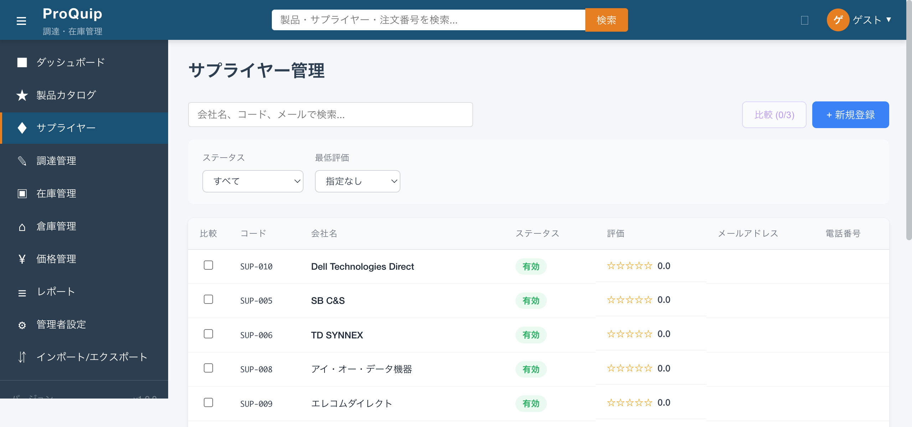
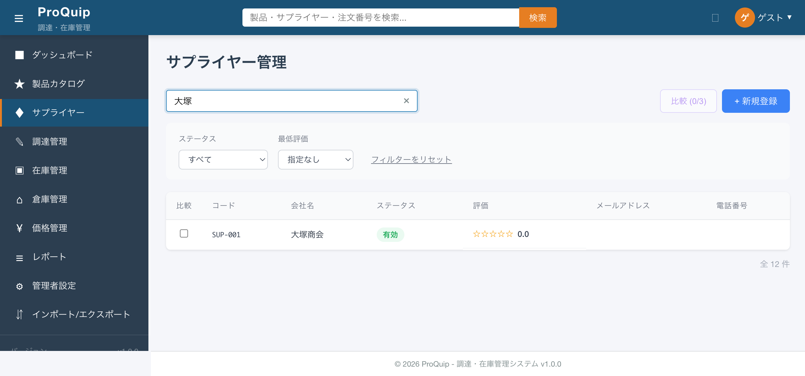
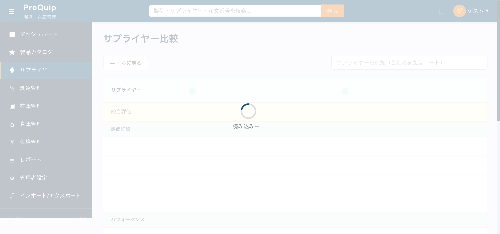
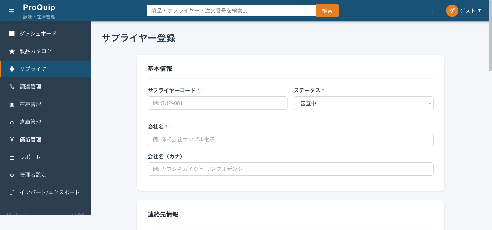

サプライヤー一覧画面の初期表示。検索テキストボックスはページ上部に配置。
screenshots/F-04/F-04-01_suppliers_list_initial.png

サプライヤーの会社名・コード・メールアドレスをキーワードで検索し、一覧テーブルをフィルタリングする入力欄。
多数のサプライヤーから目的のサプライヤーを素早く見つけるため。
| 項目名 | 型 | 必須/任意 | 入力制約 | 初期値 | バリデーション | 備考 |
|---|---|---|---|---|---|---|
| 検索テキストボックス | テキスト | 任意 | 制約なし | 空 | なし | placeholder: "検索"（HTML上は "会社名、コード、メールで検索..."） |
| 操作名 | トリガー | 実行内容 | 正常時の結果 | 異常時の結果 | 状態変化 |
|---|---|---|---|---|---|
| キーワード入力 | テキスト入力（リアルタイム） | クライアントサイドで name, code, email に対して部分一致フィルタリング | 一致するサプライヤーのみテーブルに表示 | 該当なしの場合「サプライヤーが見つかりませんでした」表示 | テーブル行数が変化、件数表示が更新 |
| クリアボタン | 検索欄右のクリアボタンクリック | 検索キーワードを空にしてフィルタリング解除 | 全件表示に戻る | - | 検索欄が空になる |
「大塚」と入力すると「大塚商会」1件のみ表示される。クリアすると全12件に戻る。
該当なしの場合、「サプライヤーが見つかりませんでした」と空状態メッセージが表示される。
なし。全ロールで利用可能（ただしBE側に@RolesAllowedなし）。
入力ありの場合、クリアボタンが出現する。
| API ID | method | path | request | response | error response | 根拠 |
|---|---|---|---|---|---|---|
| - | - | - | - | - | - | 検索はクライアントサイドフィルタリング。APIは初期ロード時のGET /api/suppliers?page=0&size=20のみ。 |
| ファイルパス | 関数/クラス/メソッド名 | 確認内容 |
|---|---|---|
| proquip-frontend/src/app/features/suppliers/supplier-list/supplier-list.component.ts | onSearch() (L136), loadSuppliers() (L96, L105-111) | クライアントサイドフィルタ: name, code, email の部分一致 |
| proquip-frontend/src/app/features/suppliers/supplier-list/supplier-list.component.html | L11 | 検索入力欄のplaceholder |
| proquip-ejb/src/main/java/com/proquip/ejb/dao/SupplierDao.java | searchByName() (L66) | BE側にもLIKE検索あるが未使用（クライアント側で実装） |
撮影条件: 「大塚」で検索後 ／ 備考: 1件に絞り込み
screenshots/F-04/F-04-01-001_search_filtered.png

High
ステータスフィルタはテーブル左上のドロップダウン。
screenshots/F-04/F-04-01_suppliers_list_initial.png
サプライヤーのステータスで一覧をフィルタリングするドロップダウン。
取引状態に応じてサプライヤーを絞り込み、管理業務を効率化するため。
| 項目名 | 型 | 必須/任意 | 入力制約 | 初期値 | バリデーション | 備考 |
|---|---|---|---|---|---|---|
| ステータスフィルタ | セレクト | 任意 | 選択肢: すべて / 取引中 / 取引停止 / 審査中 / ブロック済み | すべて | なし | フィルタリセットボタンで「すべて」に戻る |
| 操作名 | トリガー | 実行内容 | 正常時の結果 | 異常時の結果 | 状態変化 |
|---|---|---|---|---|---|
| ステータス選択 | ドロップダウン選択変更 | クライアントサイドでsupplier.statusと選択値を比較フィルタリング | 該当ステータスのサプライヤーのみ表示 | 該当なしの場合「サプライヤーが見つかりませんでした」表示 | テーブル行数・件数が変化、フィルターリセットボタン出現 |
| フィルターリセット | 「フィルターをリセット」ボタンクリック | 全フィルタ（検索・ステータス・評価）を初期値に戻す | 全件表示 | - | 全フィルタ初期化 |
「すべて」選択で全12件表示。ステータス選択で対応するステータスのサプライヤーに絞り込まれる。
該当なしの場合、空状態メッセージ表示。
なし。
「すべて」以外が選択されると「フィルターをリセット」ボタンが出現する。
| ファイルパス | 関数/クラス/メソッド名 | 確認内容 |
|---|---|---|
| proquip-frontend/.../supplier-list.component.ts | onFilterChange() (L145), statusOptions (L63) | フィルタオプション定義: ACTIVE→取引中, INACTIVE→取引停止, PENDING→審査中, BLOCKED→ブロック済み |
| proquip-ejb/.../entity/supplier/Supplier.java | status (L59) | 実際のDB値: ACTIVE, INACTIVE, SUSPENDED, PENDING_APPROVAL |
撮影条件: 「取引中」フィルタ選択後 ／ 備考: ACTIVE 10件中1件のみ表示（フィルタ不具合の可能性）
screenshots/F-04/F-04-01-002_status_filter_active.png
High
screenshots/F-04/F-04-01_suppliers_list_initial.png
サプライヤーの総合評価（0.0〜5.0）の最低値で一覧をフィルタリングするドロップダウン。
評価の低いサプライヤーを除外し、一定水準以上のサプライヤーに絞り込むため。
| 項目名 | 型 | 必須/任意 | 入力制約 | 初期値 | バリデーション | 備考 |
|---|---|---|---|---|---|---|
| 最低評価フィルタ | セレクト | 任意 | 選択肢: 指定なし / 1以上 / 2以上 / 3以上 / 4以上 / 5 | 指定なし | なし | クライアントサイドフィルタ |
| 操作名 | トリガー | 実行内容 | 正常時の結果 | 異常時の結果 | 状態変化 |
|---|---|---|---|---|---|
| 評価選択 | ドロップダウン選択変更 | supplier.rating >= 選択値 でフィルタリング | 該当サプライヤーのみ表示 | 該当なしの場合、空状態メッセージ表示 | テーブル行数・件数が変化 |
「指定なし」で全件表示。「3以上」を選択するとrating >= 3.0のサプライヤーのみ表示。現在のシードデータでは全サプライヤーのrating=0.0のため、1以上〜5の全選択で0件となる。
該当なしの場合、空状態メッセージ表示。
なし。
「指定なし」以外選択時、フィルターリセットボタン出現。
| ファイルパス | 関数/クラス/メソッド名 | 確認内容 |
|---|---|---|
| proquip-frontend/.../supplier-list.component.ts | ratingOptions (L72), loadSuppliers() (L96) | クライアントサイドでrating >= minRating フィルタ |
| proquip-ejb/.../service/SupplierServiceBean.java | addRating() (L227) | rating = quality/delivery/price/serviceの平均（0.00〜5.00） |
| proquip-web/.../resource/SupplierResource.java | enrichDto() (L578) | overallRating = SupplierRating.overallScoreの平均値 |
High
screenshots/F-04/F-04-01_suppliers_list_initial.png
全サプライヤーを一覧表示するテーブル。比較チェックボックス・コード・会社名・ステータス・評価・メールアドレス・電話番号の7列で構成。
サプライヤー全体を俯瞰し、詳細画面へのナビゲーションや比較選択の起点とするため。
| 項目名 | 表示条件 | 値の取得元 | 備考 |
|---|---|---|---|
| 比較チェックボックス | 常時 | - | F-04-01-005で詳述 |
| コード | 常時 | API: supplier.code | 例: SUP-001〜SUP-012 |
| 会社名 | 常時 | API: supplier.name | 行クリック可能（cursor: pointer） |
| ステータス | 常時 | API: supplier.status → 表示ラベル変換 | バッジ表示。ACTIVE→有効、SUSPENDED→停止中、PENDING_APPROVAL→承認待ち |
| 評価 | 常時 | API: supplier.rating | 星5つ + 数値（例: ☆☆☆☆☆ 0.0） |
| メールアドレス | 常時 | API: supplier.email | 現在全件空文字（enrichDto()で主担当者emailから取得だがデータ未設定） |
| 電話番号 | 常時 | API: supplier.phone | 現在全件空文字（同上） |
| 操作名 | トリガー | 実行内容 | 正常時の結果 | 異常時の結果 | 状態変化 |
|---|---|---|---|---|---|
| 行クリック | テーブル行クリック | /suppliers/{id}へ遷移 | サプライヤー詳細画面表示 | - | ページ遷移 |
ページロード時にGET /api/suppliers?page=0&size=20で取得。全12件表示。ページ下部に「全 12 件」と件数表示。
データなしの場合「サプライヤーが見つかりませんでした」（📄アイコン付き）。
BE側に@RolesAllowed未設定。全ロールでアクセス可能。
検索・フィルタにより行数が動的に変化。
| API ID | method | path | request | response | error response | 根拠 |
|---|---|---|---|---|---|---|
| - | GET | /api/suppliers | page=0&size=20 | PageResult<SupplierDto>: {content[], totalElements, totalPages, ...} | - | Network通信観測 |
| ファイルパス | 関数/クラス/メソッド名 | 確認内容 |
|---|---|---|
| proquip-frontend/.../supplier-list.component.ts | loadSuppliers() (L96) | API呼び出しとクライアントサイドフィルタ |
| proquip-frontend/.../supplier.service.ts | getSuppliers(page, size) (L21) | GET /suppliers?page={page}&size={size} |
| proquip-web/.../SupplierResource.java | listSuppliers() (L91), enrichDto() (L578) | ページネーションはsubList、email/phoneはprimary contactから取得 |
| proquip-ejb/.../service/SupplierServiceBean.java | findAllSuppliers() (L206) | 全件取得（ページネーションなし） |
High
screenshots/F-04/F-04-01-005_comparison_selected.png
各サプライヤー行の左端に配置されたチェックボックス。サプライヤー比較画面に送る対象を選択する。
複数サプライヤーを並べて比較検討するための選択手段。
| 項目名 | 型 | 必須/任意 | 入力制約 | 初期値 | バリデーション | 備考 |
|---|---|---|---|---|---|---|
| 比較チェックボックス | チェックボックス | 任意 | 最大3件まで選択可 | 未チェック | 3件選択時、残りのチェックボックスはdisabled | テーブル行ごとに1つ |
| 操作名 | トリガー | 実行内容 | 正常時の結果 | 異常時の結果 | 状態変化 |
|---|---|---|---|---|---|
| チェック追加 | チェックボックスクリック | selectedForCompare配列にサプライヤーIDを追加 | 比較ボタンのカウンタ更新（例: 比較 (1/3)） | - | 比較ボタンが2件以上で有効化 |
| チェック解除 | チェックボックスクリック | selectedForCompare配列からサプライヤーIDを除去 | 比較ボタンのカウンタ更新 | - | 1件以下になると比較ボタン無効化 |
0件: 比較ボタン「比較 (0/3)」disabled。1件: 「比較 (1/3)」disabled。2件: 「比較 (2/3)」enabled。3件: 「比較 (3/3)」enabled、残りチェックボックスdisabled。
3件選択済みの場合、未選択チェックボックスがdisabledになり追加選択不可。
なし。
選択数に応じて比較ボタンのラベルとdisabled状態が連動。
| ファイルパス | 関数/クラス/メソッド名 | 確認内容 |
|---|---|---|
| proquip-frontend/.../supplier-list.component.ts | toggleCompareSelection() (L197) | 最大3件制限 (L203) |
| proquip-frontend/.../supplier-list.component.html | L74 | disabled条件: selectedForCompare.length >= 3 |
High
screenshots/F-04/F-04-01-005_comparison_selected.png
選択したサプライヤー（2〜3件）を比較画面で並べて表示するボタン。
サプライヤーの評価・パフォーマンス・条件を横並びで比較し、最適なサプライヤーを選定するため。
| 項目名 | 表示条件 | 値の取得元 | 備考 |
|---|---|---|---|
| ボタンラベル | 常時 | selectedForCompare.length | 「比較 (N/3)」形式。Nは選択件数。 |
| 操作名 | トリガー | 実行内容 | 正常時の結果 | 異常時の結果 | 状態変化 |
|---|---|---|---|---|---|
| 比較画面遷移 | ボタンクリック（2件以上選択時） | /suppliers/compare?ids={id1},{id2}[,{id3}] へ遷移 | サプライヤー比較画面表示（総合評価・評価詳細・パフォーマンス・連絡先・支払条件の比較） | - | ページ遷移 |
2件選択して比較ボタンクリック → /suppliers/compare?ids=10,5 に遷移。比較画面にはサプライヤー名・総合評価・評価詳細・パフォーマンス・連絡先・メールアドレス・電話番号・支払条件が表示される。
0〜1件選択時はボタンdisabledでクリック不可。
なし。
disabled（0〜1件選択） ↔ enabled（2〜3件選択）。
| API ID | method | path | request | response | error response | 根拠 |
|---|---|---|---|---|---|---|
| - | GET | /api/suppliers/compare | supplierIds={id1,id2,id3} | 比較データ（パフォーマンスレポート） | - | ソースコード: SupplierResource.java L551, supplier.service.ts L71 |
| ファイルパス | 関数/クラス/メソッド名 | 確認内容 |
|---|---|---|
| proquip-frontend/.../supplier-list.component.ts | navigateToCompare() (L185) | query params: ids=id1,id2[,id3] |
| proquip-frontend/.../supplier.service.ts | compareSuppliers() (L71) | GET /suppliers/compare?supplierIds=... |
| proquip-web/.../SupplierResource.java | compareSuppliers() (L551) | カンマ区切りID受取、パフォーマンスレポート返却 |
撮影条件: 比較ボタンクリック後の比較画面 ／ 備考: 比較画面はローディング中のスクリーンショット
screenshots/F-04/F-04-01-006_comparison_page.png

High
screenshots/F-04/F-04-01_suppliers_list_initial.png
新しいサプライヤーを登録する画面へ遷移するボタン。ラベルは「+ 新規登録」。
新規取引先のサプライヤー情報をシステムに登録するため。
| 操作名 | トリガー | 実行内容 | 正常時の結果 | 異常時の結果 | 状態変化 |
|---|---|---|---|---|---|
| 新規登録画面遷移 | ボタンクリック | /suppliers/new へ遷移 | サプライヤー新規登録画面表示 | - | ページ遷移 |
ボタンクリックで /suppliers/new に遷移。
なし（常にクリック可能）。
現在は全ロールでボタンが表示・クリック可能。BE側にも@RolesAllowed未設定。
なし。常時enabled。
| ファイルパス | 関数/クラス/メソッド名 | 確認内容 |
|---|---|---|
| proquip-frontend/.../supplier-list.component.ts | navigateToCreate() (L178) | this.router.navigate(['/suppliers/new']) |
| proquip-frontend/.../supplier-list.component.html | L22-24 | 「+ 新規登録」ボタン |
| proquip-web/.../SupplierResource.java | createSupplier() (L152) | POST /api/suppliers |
撮影条件: 新規登録ボタンクリック後 ／ 備考: /suppliers/new への遷移確認
screenshots/F-04/F-04-01-007_new_supplier_page.png

High
screenshots/F-04/F-04-01_suppliers_list_initial.png
テーブル行をクリックしてサプライヤー詳細画面（/suppliers/:id）へ遷移する操作。
一覧から個別のサプライヤーの詳細情報にアクセスするため。
| 操作名 | トリガー | 実行内容 | 正常時の結果 | 異常時の結果 | 状態変化 |
|---|---|---|---|---|---|
| 詳細画面遷移 | テーブル行クリック | onRowClick(supplier)でrouter.navigate(['/suppliers', supplier.id]) | /suppliers/{id} へ遷移 | - | ページ遷移 |
大塚商会（SUP-001, id=1）の行クリックで /suppliers/1 に遷移。cursor: pointer でクリック可能であることを視覚的に示す。
なし。
なし。全行クリック可能。
ページ遷移。
| ファイルパス | 関数/クラス/メソッド名 | 確認内容 |
|---|---|---|
| proquip-frontend/.../supplier-list.component.ts | onRowClick() (L171) | this.router.navigate(['/suppliers', supplier.id]) |
| proquip-frontend/.../supplier-list.component.html | L69 | (click)="onRowClick(supplier)"、cursor: pointer |
High